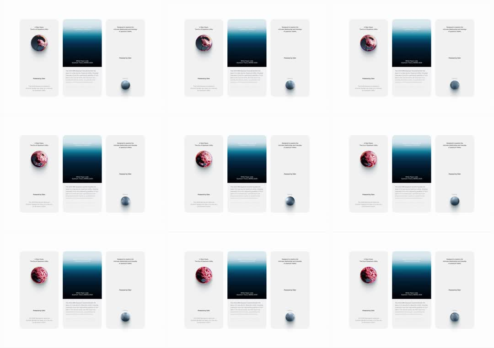

Brand story cards: a three-card editorial set - 'A New Dawn' card with a swirling marble planet sphere that cycles hue (steel blue -> magenta -> crimson), a dithered-gradient 'White Paper' card (deep ocean blue with a Bayer-dither edge fading to white at top), and a minimal manifesto card with a small 3D ball; the sphere's internal swirl churns continuously.
Media
Frame-by-frame

0-100%
Three tall cards side by side, near-white canvas. Left: small title + marble sphere whose swirl rotates and hue-drifts blue->pink->red across frames. Center: 'White Paper Linde Quantum Theory MENS 2025' on a deep blue gradient whose top edge dissolves into ordered dithering (visible Bayer-dot steps) into the page white. Right: sparse manifesto text + small glossy ball anchored mid-card. Only the sphere animates; layout fixed.
Build prompt
Rebuild this interaction 1:1: brand story cards - a three-card editorial set: "A New Dawn" card with a swirling marble planet sphere cycling hue (steel blue -> magenta -> crimson), a dithered-gradient "White Paper" card (deep ocean blue dissolving into Bayer-dither steps at the top edge), and a minimal manifesto card with a small glossy ball. Only the sphere animates.
## Integration
Integration: stack-agnostic spec - springs given as stiffness/damping, timed motions as duration + curve, canvas/shader notes are perf guidance only; map every value to your framework and animation library of choice.
## Scene
Three tall cards side by side on near-white. Left: small title + marble sphere. Center: "White Paper Linde Quantum Theory MENS 2025" on a deep blue gradient whose top edge dissolves via ordered dithering (visible Bayer-dot steps) into the page white. Right: sparse manifesto text + small glossy ball anchored mid-card.
## Motion spec
Pattern: ambient sphere, everything else still.
- Sphere: internal swirl rotates continuously (~20s/rev, linear); hue drifts through blue -> pink -> red over ~12s, linear.
- Dither card, manifesto card, layout: perfectly fixed.
## Calibration
- Hue cycle ~12s linear - the sphere is a slow planet, not a disco ball.
- Swirl rotation independent of hue (20s vs 12s) so the motion never visibly repeats.
- The Bayer-dither edge must show visible ordered steps - a smooth gradient fade betrays the concept.
## Reduced motion
Sphere holds a single hue frame; swirl frozen.
## Don't miss
- The three cards speak one language (editorial serif titles, restrained palettes) while each demos a different texture: marble, dither, gloss.
- The dither dissolves INTO the page white at the top - the card and canvas share a color.
- The manifesto card's small glossy ball is anchored mid-card, intentionally sparse.